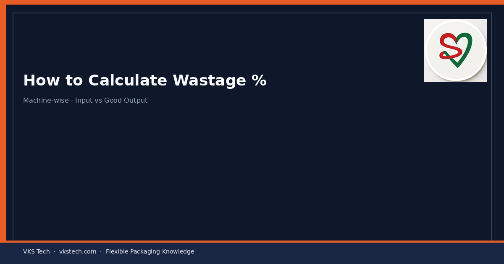
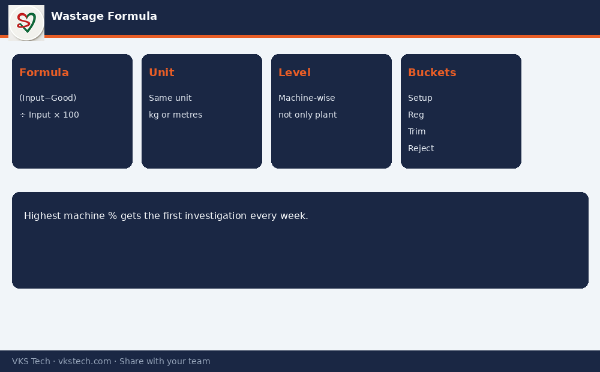

📉 If You Only Track Overall Plant Wastage, You Will Never Know Which Machine Is Quietly Burning Money.
📖 10-min read · Wastage · PPC + Production + Cost
Converting plants often report one plant-level wastage number. That number is useful for management dashboards and almost useless for action. Real control starts when you calculate wastage machine-wise and job-wise with a clear formula.
Wastage % = (Input − Good Output) ÷ Input × 100
- Input and output in the same unit (kg or metres)
- Good output = only material that passes quality and is usable downstream
- Do this per machine and per major job family
1. Why Plant-Level % Hides the Truth
Printing may run at 12% waste on short jobs while slitting runs at 2%. Averaged together they look “acceptable”. The printing loss never gets fixed because the number looks diluted.

2. Practical Buckets to Track
- Setup / start-up waste
- Registration and colour waste
- Splice and web-break waste
- Trim waste at slitting
- Rejects after quality check
Typical total converting wastage in many Indian plants sits in the 8–15% band if not tightly managed. Best plants drive major processes well below that with discipline, not luck.
Next → Understanding Efficiency in Converting Plants
📉 अगर आप सिर्फ ओवरऑल प्लांट वेस्टेज ट्रैक करते हैं, तो कभी नहीं जान पाएंगे कौन सी मशीन चुपचाप पैसे जला रही है।
📖 10-मिनट पढ़ें · वेस्टेज · PPC + प्रोडक्शन + लागत
वेस्टेज % = (इनपुट − गुड आउटपुट) ÷ इनपुट × 100
अगला → एफिशिएंसी समझना